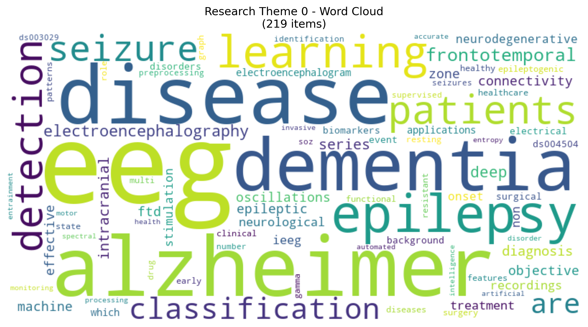

Citation Quality
Growth Timeline
Data Modalities
Network Analysis
Interactive network visualizations showing relationships between datasets and citations.
Dataset Map
Datasets positioned using semantic coordinatesCitation Map
Citations positioned using semantic coordinatesResearch Theme Analysis
Word clouds showing key terms for each research theme cluster identified through UMAP analysis.
Theme 1 - Core EEG
Primary neuroscience datasets
Theme 2 - Audio & Stimulation
Auditory processing studies
Theme 3 - Task Performance
Cognitive and behavioral tasks
Theme 4 - Advanced Methods
Methodological and analytical approaches